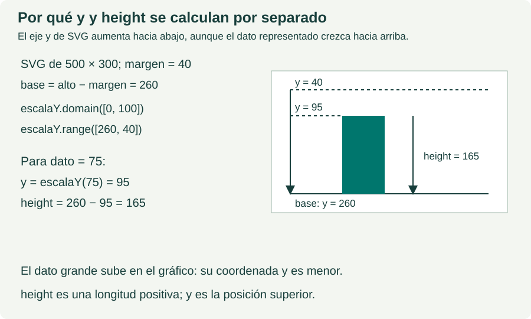

Infografías de D3 y SVG
Referencias visuales para entender coordenadas, escalas y dimensiones. Todas las imágenes están guardadas en la carpeta assets/diagramas del proyecto y se pueden consultar sin conexión.
Ver los ejemplos de vectores y dimensiones
Coordenadas y dimensiones SVG
El origen está arriba a la izquierda: x aumenta hacia la derecha e y hacia abajo.


De los datos a las longitudes
La escala convierte valores del dominio en valores del rango. SVG utiliza el resultado como una longitud.


Vectores y dimensiones
Una pareja [ancho, alto] contiene dos medidas. Cada atributo recibe la medida que le corresponde.


Posición y altura de las barras
La coordenada y sitúa el borde superior. La altura se calcula restando esa posición a la base.
